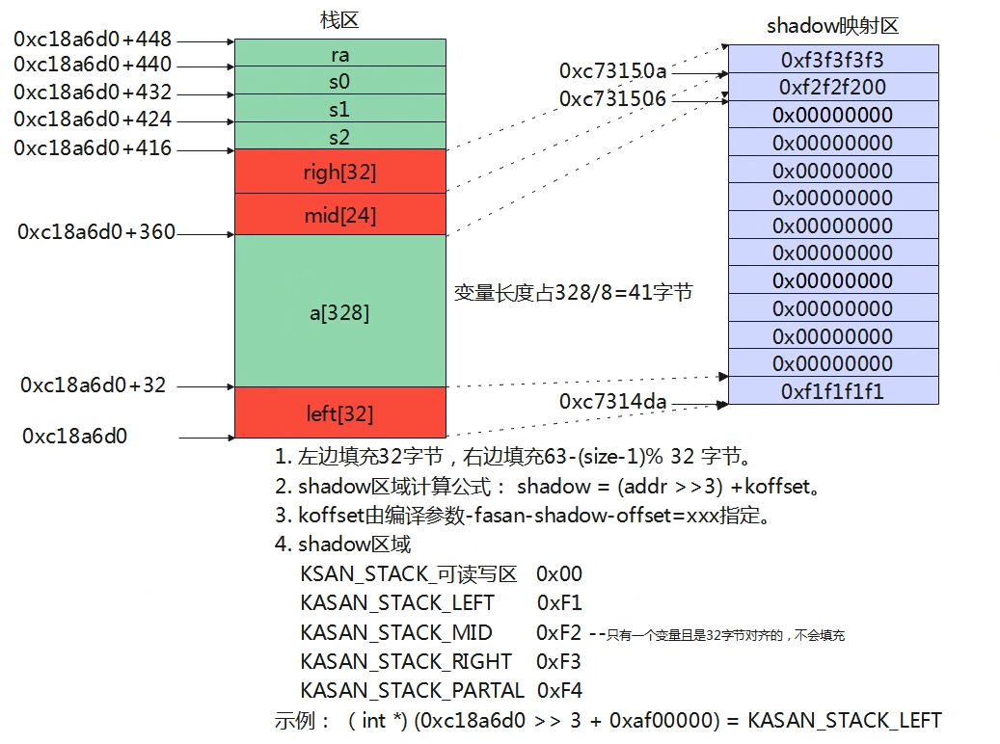

kasan是什么？（基本原理）
kasan是用于内存检测的工具，能够检测内存以下异常。
- buffer-overflow in heap,stack and globals
- use-after-free
- uninitialized-memory-read
- user-memory-access
{kind=link}
如若要支持kasan需要多划分1/8的内存用于内存检测的管理，如上图所示。分配的内存地址都是按字节对齐的，这样做为了提高cpu的效率，本章默认是8字节对齐。
如何实现分配内存地址对齐了？首先在初始化内存时，会在前后舍弃一定的字节数，保证整个地址空间起始和结束地址是8字节对齐的，在分配内存时，分配的大小也按照字节对齐来分配，如分配3字节时，会自动补齐5字节，即实际分配到的空间是8字节，只是5字节对申请者不可见，这样就可以实现分配的内存地址是按8字节对齐的了。
因为内存分配都是按照8字节对齐的，而用户申请的空间并不是按照8字节来，正如上所说请求分配了3字节，实际分配到8字节，剩余5字节对用户不可见，当用户写到了该5字节的内存也是不合法，所以了对应内存的状态一共有以下9种，影子区1字节就可以记录这9种状态。
{kind=link}
- 0字节可访问：说明这8字节内存都不可访问，影子区记录为-1。
- 前K字节可以访问：K值记录在影子区，如当K为2，表示0~1字节可访问。K取值为1~7。
- 全都可以访问：影子区写0。
从上可知，对访问内存合法性的可以根据影子区的值来判断。判断公式如下：
（1） 对于分配的内存是8字节情况
*a = ...
char *shadow = ( a>> 3) + offset;
if (*shadow)
report_error(a);
*a = ....
（2）对于分配内存小于8字节情况
*a = ...
char *shadow = (a >> 3) + Offset;
if (*shadow && *shadow < (a & 7) + N)
report_error(a);
*a = ...
{kind=link}
示例如上图，依旧是用户申请了3个字节空间，_shadow = 3。当客户从第2个空间访问2字节时，但是_shadow < 1 + 2，条件不成立，因此合法。如果从2个空间访问3字节时，*shadow < 1 + 3,条件成立，即为非法。
通过上面的方法可以解决use-after-free的问题，但是还不能解决buffer-overflow的问题。解决buffer-overflow，就是在分配内存的前后填充redzone，这段填区也将进行影子区映射，那么当访问越界时就会检查到影子区的内存，提示非法，实现原理参考下图所示。
{kind=link}
简单小结一下kasan的基本原理：
- 内存分配地址和空间都是8n字节对齐的，本章默认8字节对齐。
- 总内存被分为n份，每份大小为8字节内存，每份用1字节内存标识，形成一一映射关系，标识区称为影子区域。
- 当请求字节不是8的整数倍时，如分配了3字节，实际分配的也是8字节，仅是另外5字节对分配者非法。因此8字节内存的访问权限一共有9种状态，其当前的状态在分配内存时记录到映射的影子区域中。
- 在分配内存时，为了支持越界访问操作，会在请求内存的前后填充red zone，red zone一般前后各8字节，也有对应的影子区域，该值填充0xfe。
- 编译器会在指令访问（读写）内存时，进行自动插桩代码，检查要访问的目标内存对应的影子区，判断是否合法，当检查非法时就会报错。
kasan何时设置影子区
{kind=link}
（1）malloc的时候会分配2* redsize + wantsize，并对内存进行映射填充值。 redzone映射区域填充0xfe,读写区若8字节对齐则全填充0x0;若不对齐，余下不足8字节的实际值填充到最后1字节的影子区域。内存实际分配的还是8字节对齐的，只是对应应用来说，可访问的不足8字节，剩下的当redzone。 （2）free的时候对齐对应的影子区填充0xff。
申请内存
malloc
_malloc_r
pvPortMalloc
__internal_malloc
kasan_malloc_small //addr = 0xc178938, size = 16
kasan_unpoison_shadow
kasan_poison_shadow(address, size, 0); //分配空间对应的地址设置为0
shadow_start = kasan_mem_to_shadow(address);
shadow_end = kasan_mem_to_shadow(address + size);
memset(shadow_start, value, shadow_end - shadow_start);
kasan_poison_shadow(left_rz, sizeof(debug_magic.redzone), KASAN_KMALLOC_REDZONE);
//设置内存左redzone
kasan_poison_shadow(right_rz, sizeof(debug_magic.redzone), KASAN_KMALLOC_REDZONE);
//设置内存右redzone
//实际分配内存左右预留一个空间，然后这预留的空间对应的shadow区域也要填充值，假设分配了16字节，实际分配了8+16+8=32字节空间。然后对应的shadow区域是1+2+1字节大小。在heap4中malloc函数中，会多分配16字节长度，如下。
_internal_malloc(size_t xWanteSize)
xWantSize +=2*xSlabDegbuMgicSize;
申请内存，前后的内存redzone对应的shadow区域写0xFE,表示表示红区。实际内存对应的shadow区域写0，表示内存已经被申请，表示可写。
释放内存
free
__internal_free
kasan_free_large
kasan_poison_shadow(page, size, KASAN_FREE_PAGE);
//设置0xff到对应的shadow区域，表示该内存已经释放。不能再写了。
kasan如何检查内存合法性
{kind=link}
初始化
初始化部分kasan_early_init/kasan_init/do_ctors
kasan_early_init
kasan_shadow_init_nommu
for()
*(xxx) = 0
将所有的shadaow memory设置为0
kasan_init
kasan_init_nommu
kasan_init_report
kasan_flags |= KASAN_REPORT_INIT_FLAG; //设置kasan标志位
kasan_enable_report
kasan_flags |= KASAN_REPORT_SHOW_FLAG;
rt_malloc_small_sethook(rt_malloc_small_func_hook);
rt_malloc_small_hook = hook; //设置回调函数，heap4 __internal_malloc的时候调用
rt_free_small_sethook(rt_free_small_func_hook);
rt_free_small_hook = hook; //设置回调函数，heap4 __internal_free的时候调用
影子区映射
adress:0+CONFIG_ARCH_MEM_LENGTH -------------------
|XXXXXXXXXXXXXXXXXX|
adress:0+x -------------------- KASAN_SHADOW_START
| |
| |
| |
adress:0 ------------------- CONFIG_ARCH_START_ADDRESS
#define KASAN_SHADOW_SIZE (CONFIG_ARCH_MEM_LENGTH>>3) // 相当于除以8
#define KASAN_SHADOW_START (CONFIG_ARCH_START_ADDRESS + CONFIG_ARCH_MEM_LENGTH - KASAN_SHADOW_SIZE)
#define KASAN_SHADOW_OFFSET (KASAN_SHADOW_START - (CONFIG_ARCH_START_ADDRESS>>3))
static inline void *kasan_mem_to_shadow(const void *addr)
{
return (void *)((unsigned long)addr >> KASAN_SHADOW_SCALE_SHIFT)
+ KASAN_SHADOW_OFFSET;
实际= KASAN_SHADOW_START + addr >> KASAN_SHADOW_SCALE_SHIFT - CONFIG_ARCH_START_ADDRESS>>3
addr肯定比CONFIG_ARCH_START_ADDRESS要大，也就是说，shadow的开始地址要先减掉
arch_start之前的地址，这样避免浪费空间。
}
通过分配的地址查找对应shadow地址，内存分配是8字节对齐分配，如分配3字节，实际也是8字节空间。
__asan_load/store定义
#define DEFINE_ASAN_LOAD_STORE(size) \\
void __asan_load##size(unsigned long addr) \\
{ \\
KASAN_CHECK_ADDR_FILTER(addr);\\
check_memory_region_inline(addr, size, false, _RET_IP_);\\
} \\
__alias(__asan_load##size) \\
void __asan_load##size##_noabort(unsigned long); \\
void __asan_store##size(unsigned long addr) \\
{ \\
KASAN_CHECK_ADDR_FILTER(addr);\\
check_memory_region_inline(addr, size, true, _RET_IP_); \\
} \\
__alias(__asan_store##size) \\
void __asan_store##size##_noabort(unsigned long); \\
DEFINE_ASAN_LOAD_STORE(1);
DEFINE_ASAN_LOAD_STORE(2);
DEFINE_ASAN_LOAD_STORE(4);
DEFINE_ASAN_LOAD_STORE(8);
DEFINE_ASAN_LOAD_STORE(16);
上面的函数展开后得到
void __asan_load1(unsigned long addr)
{
KASAN_CHECK_ADDR_FILTER(addr);
check_memory_region_inline(addr, 1, false, _RET_IP_);
}
__alias(__asan_load1)
void __asan_load1_noabort(unsigned long);
void __asan_store1(unsigned long addr)
{
KASAN_CHECK_ADDR_FILTER(addr);
check_memory_region_inline(addr, 1, true, _RET_IP_);
}
__alias(__asan_store1)
void __asan_store1_noabort(unsigned long);
void __asan_load2(unsigned long addr)
{
KASAN_CHECK_ADDR_FILTER(addr);
check_memory_region_inline(addr, 2, false, _RET_IP_);
}
__alias(__asan_load2)
void __asan_load2_noabort(unsigned long);
void __asan_store2(unsigned long addr)
{
KASAN_CHECK_ADDR_FILTER(addr);
check_memory_region_inline(addr, 2, true, _RET_IP_);
}
__alias(__asan_store2)
void __asan_store2_noabort(unsigned long);
void __asan_load4(unsigned long addr)
{
KASAN_CHECK_ADDR_FILTER(addr);
check_memory_region_inline(addr, 4, false, _RET_IP_);
}
__alias(__asan_load4)
void __asan_load4_noabort(unsigned long);
void __asan_store4(unsigned long addr)
{
KASAN_CHECK_ADDR_FILTER(addr);
check_memory_region_inline(addr, 4, true, _RET_IP_);
}
__alias(__asan_store4)
void __asan_store4_noabort(unsigned long);
void __asan_load8(unsigned long addr)
{
KASAN_CHECK_ADDR_FILTER(addr);
check_memory_region_inline(addr, 8, false, _RET_IP_);
}
__alias(__asan_load8)
void __asan_load8_noabort(unsigned long);
void __asan_store8(unsigned long addr)
{
KASAN_CHECK_ADDR_FILTER(addr);
check_memory_region_inline(addr, 8, true, _RET_IP_);
}
__alias(__asan_store8)
void __asan_store8_noabort(unsigned long);
void __asan_load16(unsigned long addr)
{
KASAN_CHECK_ADDR_FILTER(addr);
check_memory_region_inline(addr, 16, false, _RET_IP_);
}
__alias(__asan_load16)
void __asan_load16_noabort(unsigned long);
void __asan_store16(unsigned long addr)
{
KASAN_CHECK_ADDR_FILTER(addr);
check_memory_region_inline(addr, 16, true, _RET_IP_);
}
__alias(__asan_store16)
void __asan_store16_noabort(unsigned long);
__alias是给函数起一个别名，从上可知，定义了如下几个函数的实现。
__asan_loadx
__asan_loadx
__asan_loadx_noabort
其中x为1/2/4/8/16
__asan_loadx
{
KASAN_CHECK_ADDR_FILTER(addr);
unsigned long t = (unsigned long)addr;
if ((t < CONFIG_ARCH_START_ADDRESS) || (t > (CONFIG_ARCH_START_ADDRESS + CONFIG_ARCH_MEM_LENGTH)))
return ;
上面代码的意思就是，只对特定范围的地址做检测，不再该范围的不检查，比如XIP的代码，没必要检测。
check_memory_region_inline(addr, X, true, _RET_IP_);
}
检测
1/2/4/8/16字节
以4字节的来做示例分析，其他的类似。
static __always_inline bool memory_is_poisoned_4(unsigned long addr)
{
uint8_t *shadow_addr = (uint8_t *)kasan_mem_to_shadow((void *)addr);
//获取影子区的值
//如果影子区的值不等于继续检查，可能是不对齐的情况，比如分配了3字节，有5字节属于redzone
if (unlikely(*shadow_addr))
{
//判断第4个字节是否可访问，如果不可访问说明非法。
if (memory_is_poisoned_1(addr + 3))
{
return true;
}
/*
* If single shadow byte covers 4-byte access, we don't
* need to do anything more. Otherwise, test the first
* shadow byte.
*/
//如果第4字节为合法，满足*shadow >= (addr & 7) + N 则合法，否则非法。
if (likely(((addr + 3) & KASAN_SHADOW_MASK) >= 3))
{
return false;
}
return unlikely(*(uint8_t *)shadow_addr);
}
return false;
}
static __always_inline bool memory_is_poisoned_1(unsigned long addr)
{
int8_t shadow_value = *(int8_t *)kasan_mem_to_shadow((void *)addr);
//获取影子区的值
//如果影子区的值不等于0，即进一步判断
if (unlikely(shadow_value))
{
//判断原理与前面算法一致： *shadow < (addr & 7) + N为非法，否则为合法。
int8_t last_accessible_byte = addr & KASAN_SHADOW_MASK;
return unlikely(last_accessible_byte >= shadow_value);
}
return false;
}
N字节
* 判断内存对应的影子内存中，起始和结束shadow值是否都为 0
结束地址是对应地址长度的影子地址的下一个影子地址 */
ret = memory_is_zero(kasan_mem_to_shadow((void *)addr),
kasan_mem_to_shadow((void *)addr + size - 1) + 1);
if (ret)
{
unsigned long last_byte = addr + size - 1;
int8_t *last_shadow = (int8_t *)kasan_mem_to_shadow((void *)last_byte);
/*如果ret!=last_shadow 那么在连续的内存检测过程中，就已经检测到了
一个非法权限，即有问题 */
/* ||后面的检测方案和 memory_is_poisoned_1 实现是相同的 */
if (unlikely(ret != (unsigned long)last_shadow ||
((long)(last_byte & KASAN_SHADOW_MASK) >= *last_shadow))) {
return true;
}
return false;
}
kasan全局变量实现
{kind=link}
（1）当使能使能了asan-globals=1参数后，编译器会自动为每个全局变量填充red_zone。 redzone的大小为63-(size-1)%32，为了保证与32字节对齐。 （2）填充redzone后，编译器会为每个变量自动生成一个xxx_name的构造函数，该构造函数会调用__asan_register_globals进行注册，将全局变量的内存区域与影子区域建立映射并填充影子区的值，填充方法与heap一致。
以上操作全是编译器自动行为，应用层最终调用do_ctors回调调用构造函数即可。访问时判断内存合法性与前面算法一致。
全局变量影子区初始化
do_ctors
*fn = &_ctors_start
for(;fn< _ctors_end;fn++)
(*fn)();
调用_ctors_start和_ctors_end直接的回调函数，用于初始化全局变量的shadow
上面的地址在链接脚本的
#if (defined(CONFIG_KASAN))
/* .ctors */
. = ALIGN(8);
__ctors_start__ = .;
KEEP(*(.ctors))
KEEP(*(SORT(.init_array.*)))
KEEP(*(.init_array))
__ctors_end__ = .;
#endif
先调用do_ctors，调用每个工具链为每个变量生成的构造函数，构造函数调用__asan_register_globals。
static void register_global(struct kasan_global *global)
{
KASAN_CHECK_ADDR_FILTER(global->beg);
size_t aligned_size = round_up(global->size, KASAN_SHADOW_SCALE_SIZE);
kasan_unpoison_shadow(global->beg, global->size);
kasan_poison_shadow(global->beg + aligned_size,
global->size_with_redzone - aligned_size,
KASAN_GLOBAL_REDZONE);
}
void __asan_register_globals(struct kasan_global *globals, size_t size)
{
int i;
for (i = 0; i < size; i++)
{
register_global(&globals[i]);
}
}
kasan局部变量实现
{kind=link}
- 左边填充32字节，右边填充63-(size-1)% 32 字节。
- shadow区域计算公式： shadow = (addr >>3) +koffset。
- koffset由编译参数-fasan-shadow-offset=xxx指定。
- shadow区域 KSAN_STACK_可读写区 0x00 KASAN_STACK_LEFT 0xF1 KASAN_STACK_MID 0xF2 --只有一个变量且是32字节对齐的，不会填充 KASAN_STACK_RIGHT 0xF3 KASAN_STACK_PARTAL 0xF4
示例： （int *) (0xc18a6d0 >> 3 + 0xaf00000) = KASAN_STACK_LEFT 以上操作全是编译器自动行为，用户只需要使能编译参数即可。
void foo() {
char rz1[32]; // 32-byte aligned
char a[328];
char rz2[24];
char rz3[32];
int *shadow = (&rz1 >> 3) + kOffset; //计算变量映射shadow区的起始地址
shadow[0] = 0xffffffff; // poison rz1
shadow[11] = 0xffffff00; // poison rz2
shadow[12] = 0xffffffff; // poison rz3
<------------- CODE ------------->
shadow[0] = shadow[11] = shadow[12] = 0;
}
官方解释算法如上，当工具链接加上--param asan-stack=1，局部变量redzone填充以及shadow映射填充值全工具链自动完成。对应局部变量需要左右都需要填充redzone，所以可以划分为以下4个部分。
- left redzone： 32字节。
- 变量长度：实际的变量长度
- mid redzone：该区域有两个用途①是补齐变量长度，让其32字节对齐。②是当存在多个变量时，用于中间区域的隔离。当变量长度不是32字节对齐的，填充长度是变量长度+mid redzone长度能够32字节对齐。mid redzone= 63-(size-1)%32 -32。当存在多个变量中，变量与变量之间至少要有32字节用于隔离。
- right redzone:32字节。
对于上面4个内存区域，也可以将shadow映射区划分为4个部分
- left redzone shadow: 填充0xF1
- 变量长度：都填充0x0;
- mid redzone: 填充0xF2
- right redzone: 填充0xF3；
注意： 当只有一个变量且该变量长度是32字节对齐，则没有mid redzone区域。 
{kind=link}
下面来段实验，定义了这么一段代码。
void test_asan_xxx(void)
{
char a[328] = {1};
memset(a,0x0,328);
}
下面是反汇编的结果
void test_asan_xxx(void)
{
c0efd34: 7121 addi sp,sp,-448 //开辟448空间内存
c0efd36: f1f1f7b7 lui a5,0xf1f1f //a5=0xf1f1f<<12
c0efd3a: fb22 sd s0,432(sp) //将s0存储到sp+432位置
c0efd3c: f726 sd s1,424(sp) //将s1存储到sp+424位置
c0efd3e: f34a sd s2,416(sp) //将s2存储到sp+416位置
c0efd40: ff06 sd ra,440(sp) //将ra存储到sp+440位置
//开辟一个栈空间为448字节，并且将a5=0xf1f1f000
//将s0,s1,s2,ra压入栈中。
c0efd42: 840a mv s0,sp //s0指向sp，即填充32字节的地址
c0efd44: 1f17879b addiw a5,a5,497 //a5 = 0xf1f1f1f1
c0efd48: 800d srli s0,s0,0x3 //s0 = s0 >> 3
c0efd4a: 0af00937 lui s2,0xaf00 //s2 = 0xaf00000,即koffset
c0efd4e: 4089578b srw a5,s2,s0,0 //*(s0>>0 + s2)=a5
//写KASAN_STACK_LEFT
//对变量的前32字节 shadow映射区填充0xf1f1f1f1(8字节映射1字节)
//int *shadow = (sp >> 3) + koffset;
//shadow区域是按照4字节对齐存储，对应的变量就是32字节。
// shadow[0] = 0xf1f1f1f1
c0efd52: f2f2f7b7 lui a5,0xf2f2f //a5 = 0xf2f2f000
c0efd56: 2007879b addiw a5,a5,512 //a5 = 0xf2f2f200
c0efd5a: 008904b3 add s1,s2,s0 //s1 = s2 +s0，即32字节映射区地址
c0efd5e: d4dc sw a5,44(s1) //从32字节映射区偏移44字节写入0xf2f2f200
//写KASAN_STACK_MID（包含数据区对齐32字节后剩余部分的shadow）
//因为数组长度是328字节，对应的shadow是41字节，shodow是每4字节存储，所以剩余1字节
//就随着REDZONE映射shadow区域一起填充，余下的3字节就填充f2。
//所以STACK_MID就是偏移44的位置。
c0efd60: f3f3f7b7 lui a5,0xf3f3f
c0efd64: 3f37879b addiw a5,a5,1011
c0efd68: d89c sw a5,48(s1) //0xc73150a地址内容=0xf3f3f3f3
//写KASAN_STACK_RIGHT
//最后余下32字节redzone，对应4字节填充f3
char a[328] = {1};
memset(a,0x0,328);
c0efd6a: 1008 addi a0,sp,32
c0efd6c: 14800613 li a2,328
c0efd70: 4581 li a1,0
c0efd72: acfc20ef jal ra,c0b2840 <memset>
{
c0efd76: 4089500b srw zero,s2,s0,0
}
c0efd7a: 70fa ld ra,440(sp)
c0efd7c: 745a ld s0,432(sp)
{
c0efd7e: 0204b623 sd zero,44(s1)
}
c0efd82: 791a ld s2,416(sp)
c0efd84: 74ba ld s1,424(sp)
c0efd86: 6139 addi sp,sp,448
c0efd88: 8082 ret
当定义两个变量时示例
void test_asan_xxx(void)
{
char a[328] = {1};
char b[144] = {1};
memset(a,0x0,328);
memset(b,0x0,128);
}
{kind=link}
left值依旧是32字节没有变化，在a数组和b数组中间填充了48字节的mid redzone，其中mid[16]字节是为了对齐b数组让其32字节对齐的，而mid[32]是用于隔离a[328]和b[144]数组的。